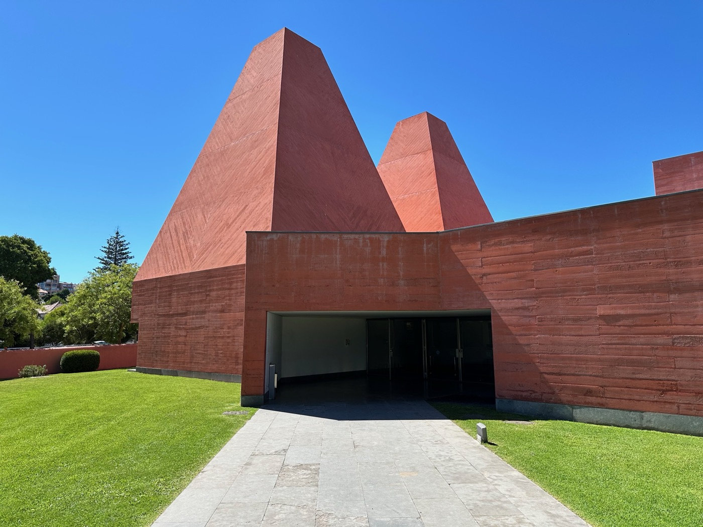
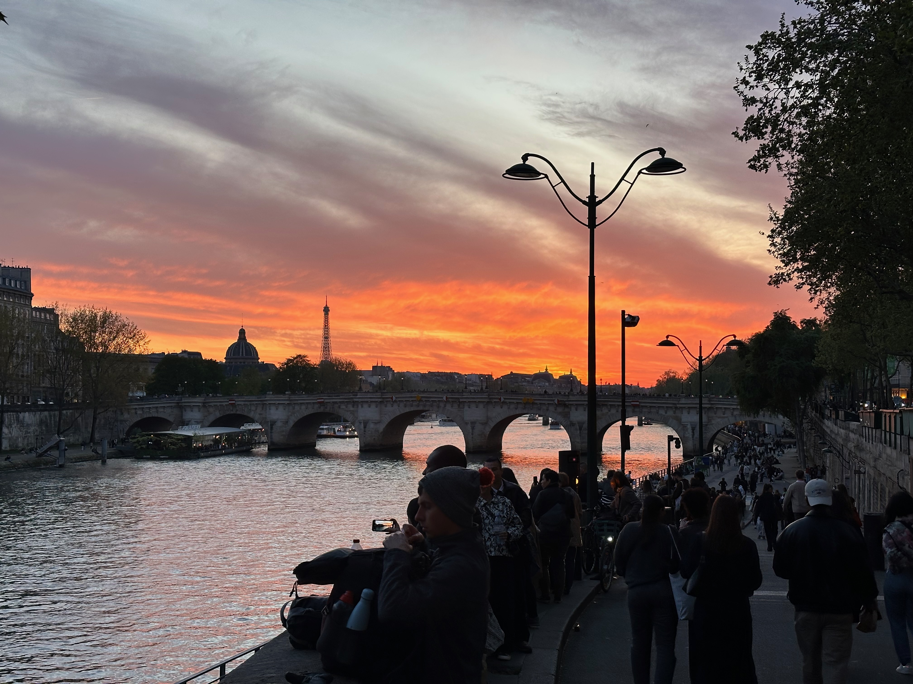

Works
Selected projects shaped as a tagged, readable project archive.
Inspired by editorial project indexes, this page gathers spatial, cultural, and research-led work into one filterable archive so the collection can be explored by theme, region, and way of working.
Project archive
Browse by tags, then reorder the archive the way you want.
10 projects

Harbor Walk Atlas reshaping an industrial edge into a slow neighborhood promenade
A mixed-use waterfront framework focused on public edges, housing transitions, and walkable daily life.

Night Market Canopy creating safer evening streets through light, stalls, and seating
A public realm concept turning a traffic-heavy corridor into a compact cultural night market.

Tram Square Reframed returning street priority to people at a civic interchange
A mobility-first redesign that simplifies crossings, enlarges waiting zones, and cools the square.

Civic Bathhouse Commons pairing shared wellness rooms with affordable urban housing
A neighborhood anchor that combines collective care spaces, small retail, and intergenerational homes.

Riverside Mobility Garden linking transit, shade, and recreation along a flood-prone corridor
A layered landscape strategy where bike movement, stormwater, and seating share one continuous edge.

Lantern Courtyard Archive preserving neighborhood memory through rooms, objects, and shared kitchens
An adaptive reuse proposal that mixes local archive displays with everyday domestic programming.

Desert Shade Corridor testing cooler walking routes between stations, schools, and markets
A climate-responsive street toolkit focused on arcades, misters, tree canopies, and evening use.

Library Threshold Study exploring how learning spaces can feel civic before they feel institutional
A public interior study on entrances, reading rooms, and soft transitions between home and city.

Coastal Play Terrace turning a seawall into a family-scale place for climbing, resting, and watching
A seaside public realm proposal using topography, handrails, and play surfaces instead of fenced programs.

Market Street Cooling Rooms creating small climate shelters in a dense commercial district
A phased pilot for public cool rooms, drink stations, and shaded stoops woven into an active souk street.